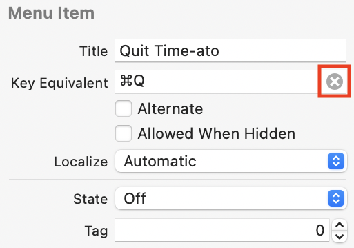

7.为一个应用程序使用菜单栏¶
在上一节中，你使用SwiftUI构建了一个标准的基于窗口的Mac应用程序。在这一节中，你将朝着一个完全不同的方向前进。
首先，你将使用AppKit，而不是SwiftUI，作为你应用程序的主要框架。第二，这个应用不会像之前的应用那样有一个标准的窗口--它将从你的菜单栏中运行。
你的应用程序将是一个Pomodoro计时器，你将把一天的工作分成一系列25分钟的任务。每项任务结束后，该应用程序将提示你休息5分钟，每隔4项任务后，再休息更长时间。

一路走来，你会了解到菜单栏应用程序、AppKit、计时器、警报、通知以及如何将SwiftUI视图集成到AppKit应用程序中。
设置应用程序¶
在Xcode中，使用macOS App模板创建一个新项目。将名称设为TIME-ATO，语言设为Swift。但是这一次，将界面设置为Storyboard。
保存应用程序，看一下开始的文件：
这一次，你的起始.swift文件是AppDelegate.swift和ViewController.swift。AppDelegate处理应用程序的生命周期，对应用程序的启动、停止、激活、停用等做出反应。ViewController处理初始窗口的显示。
这个项目和你在上一节创建的SwiftUI项目的另一个主要区别是Main.storyboard。在AppKit应用中，就像在UIKit应用中一样，这是你布置用户界面的地方。
检查一下storyboard，有三个场景：
Application Scene：主菜单和应用程序代表是最重要的组件。Window Controller Scene：每个macOS视图控制器都需要一个父窗口控制器来显示它。View Controller Scene：这里包含视图，是你在基于窗口的应用程序中进行设计工作的地方。
将应用程序转换为一个菜单栏应用程序¶
现在，这个应用程序与你在上一节中创建的应用程序非常相似，只是它使用了AppKit。它有一个初始窗口和一个完整的菜单栏。但你想要的是一个启动时没有窗口，作为菜单栏的一部分运行的应用程序，就像苹果的许多控制工具一样。
要将你的应用项目转换为菜单栏应用，你需要做三件事：
- 摆脱窗口和大部分的菜单。
- 设置一个与菜单相连的状态栏项目。
- 在
Info.plist中配置一个设置。
摆脱窗口和菜单¶
首先，去掉窗口。在Main.storyboard中，选择文件大纲中的View Controller Scene并按Delete。对 "窗口控制器场景 "做同样的操作。
展开Application Scene ▸ Application ▸ Main Menu。选择并删除所有的菜单，除了TIME-ATO：
接下来，展开Time-ato ▸ Menu，删除第一个Separator和最后一个Separator之间的所有菜单：
最后，从项目导航器中删除ViewController.swift，因为你已经从故事板中删除了它的场景。
现在你已经删除了所有不需要的组件。
设置状态栏项目¶
为了创建一个状态栏项目，打开AppDelegate.swift。给AppDelegate添加这两个属性：
var statusItem: NSStatusItem?
@IBOutlet weak var statusMenu: NSMenu!
NSStatusItem是macOS在系统菜单中显示的一个项目，即屏幕右侧的菜单栏部分。它将容纳你的应用程序的菜单。这个命名就是为什么你经常看到这样的应用程序被称为status bar apps。
你将把NSMenu链接到故事板中的菜单。@IBOutlet将其标记为界面生成器可以连接的视图。
将applicationDidFinishLaunching(_:)的内容替换为：
// 1
statusItem = NSStatusBar.system.statusItem(
withLength: NSStatusItem.variableLength)
// 2
statusItem?.menu = statusMenu
// 3
statusItem?.button?.title = "Time-ato"
statusItem?.button?.imagePosition = .imageLeading
statusItem?.button?.image = NSImage(
systemSymbolName: "timer",
accessibilityDescription: "Time-ato")
// 4
statusItem?.button?.font = NSFont.monospacedDigitSystemFont(
ofSize: NSFont.systemFontSize,
weight: .regular)
那么，这里发生了什么？
- 在全系统的
NSStatusBar中添加一个新的statusItem，并将其设置为可变长度，以便它可以调整以适应其内容。 - 将你之前声明的
NSMenu设置为该状态项的菜单。 - 为状态项配置一个标题和一个引导图像。在菜单栏中实际显示的是一个按钮。而当你不使用
SwiftUI时，使用SF符号就不那么容易了! - 为状态项的按钮设置字体。这最终会在计时器倒计时时显示数字，但在默认的系统字体中，数字是成比例的，所以
1没有9那么宽，这使得数字变化时显示跳动。NSFont可以给你一个单行数字的系统字体版本，在这种情况下看起来会好很多。
你已经声明了statusMenu，并在statusItem中使用了它，但现在你需要回到故事板并连接它。
打开Main.storyboard，在项目导航器中Option-click``AppDelegate.swift，把它打开到旁边。如果Application Scene没有展开，Option点击它可以完全展开。Control-drag从Time-ato下的菜单到AppDelegate.swift的statusMenu。当你看到statusMenu周围有一个蓝色的盒子时，你就可以放手了，这将建立连接。
现在关闭二级编辑器，给自己更多空间。
配置Info.plist¶
最后，你需要更新Info.plist。在项目导航器的顶部选择项目，点击目标名称。点击顶部的Info标签，如果有必要，展开Custom macOS Application Target Properties部分。
选择任何条目并点击其行中心的Plus按钮来添加新的行。滚动直到你可以从列表中选择应用程序是代理（UIElement），并将其值改为YES（如果你看不到右边的Value列，请展开窗格）：
你终于准备好建立和运行你的菜单栏应用程序了。没有窗口出现，也没有图标在Dock中跳动。看看你的菜单栏的右边。那里有你的菜单栏应用，点击应用名称就会弹出你的菜单，有两个工作菜单项：
Note
如果你尝试About Time-ato菜单项，它可能看起来像什么都没发生。隐藏你打开的应用程序，你会看到关于框。它是可见的，但没有被带到前面来。你以后会解决这个问题。
为什么是AppKit？¶
现在你已经有了你的应用程序的基本结构，你可能想知道AppKit。什么是AppKit，为什么这个应用要使用它？
Why是一个容易回答的问题。SwiftUI还是很新的，但是AppKit已经存在了20多年了。这意味着大多数macOS应用都使用AppKit。如果你想找一份开发Mac应用的工作，或者你想在一些开源的Mac项目上工作，很可能会使用AppKit。因此，虽然SwiftUI是未来的趋势，但AppKit仍然占主导地位，学习一些关于它的工作原理是很重要的。
现在来谈谈什么是AppKit？解释这个问题需要上一堂历史课。
1985年，史蒂夫-乔布斯被迫离开了苹果。他创立了NeXT（是的，他们真的这么写），这是一家专门为商业和研究提供高端计算机的电脑公司。NeXT开发了NeXTSTEP平台，这是一个基于Unix的操作系统。当乔布斯在1997年回到苹果公司时，他带来了NeXTSTEP，它成为OS X和后来macOS的基础。
为Mac编程的应用环境被命名为Cocoa，如果你看一下AppDelegate.swift，你会发现文件中导入的唯一库是Cocoa。
键盘点击Cocoa一词，选择Jump to Definition。这显示了一个包含其他三个导入的文件：
import AppKit
import CoreData
import Foundation
Cocoa是一个超级组，包含Foundation，它是所有苹果设备编程下面的基本库，CoreData用于数据库，AppKit用于用户界面。
Command-click AppKit，再次选择Jump to Definition。这一次，你会看到一个巨大的列表，其中包括构成AppKit的所有NS对象。现在你知道这些都来自于NeXTSTEP，你可以看到为什么它们都有NS这个前缀。
有趣的是，Cocoa这个名字最初是由苹果公司为一个多媒体项目申请的商标。当他们需要为他们的新应用开发系统取一个名字时，他们决定重新使用Cocoa以避免注册新商标的延误。
CocoaTouch后来才出现，用于iOS设备的编程，并且用UIKit代替了AppKit。由于苹果工程师从头开始创建了UIKit，他们能够选择更合理的前缀UI。这两个框架的许多界面元素都是一样的，只是把NS和UI换了一下。还有一些看起来是一样的，但有不同的属性和方法，如果你要转换任何项目，你需要检查一下。
添加模型¶
现在你知道了一点关于AppKit的历史，是时候回到应用程序了。下载本章的支持材料，打开assets文件夹。
从assets中拖动Models文件夹到你的项目导航器中，选择Copy items if needed，Create groups，并选中TIME-ATO目标：
在Models组中，Task是定义应用程序将要进行的任务的结构。它还有一个带有静态属性的扩展，提供了一些样本任务的集合。TaskTimes设置过程中每个阶段的长度，在调试模式下使用一组较短的时间，以使应用程序更快地进行测试。TaskStatus是一个枚举，定义了一个任务的可能状态。每个状态都有自己的文字、颜色和图标，你最终会在菜单中显示。
静态菜单项目¶
菜单将包含两种类型的项目：用于控制应用程序的静态项目和用于显示任务的动态项目。
从静态项目开始。打开Main.storyboard并完全展开Application Scene。
点击窗口右上方的+或按Shift-Command-L来打开库。搜索菜单并拖动一个Menu Item到文档大纲中的两个分隔符之间：
按住Option，将新的项目向下拖动一行来复制它。重复这个步骤，这样你就会有三个标有Item的新条目。
用同样的方法来复制第一个分隔符。现在，你的应用程序场景将看起来像这样：
选择第一个新项目，在右边显示检查器，选择属性检查器，将标题改为Start Next Task：
以同样的方式，将其他项目的标题改为：
- 编辑任务...（使用
Option-;键入省略号。） - 登录时启动
最后，选择Quit Time-ato菜单项，并点击X来删除Key Equivalent：

由于菜单栏应用程序没有接受焦点的窗口，它们不能对键盘快捷键做出反应。
现在你已经完成了故事板的制作，故事板中的菜单预览看起来是这样的：
你将以编程方式放置动态项目，在顶部两个分隔符之间。
动态菜单项¶
为了添加、删除和更新代表任务的菜单项，你将添加一个MenuManager类。它将作为NSMenuDelegate，检测用户何时打开或关闭菜单，并根据需要更新显示。
创建一个新的Swift文件，名为MenuManager.swift。将其内容替换为：
// 1
import AppKit
// 2
class MenuManager: NSObject, NSMenuDelegate {
// 3
let statusMenu: NSMenu
var menuIsOpen = false
// 4
var tasks = Task.sampleTasksWithStatus
// 5
let itemsBeforeTasks = 2
let itemsAfterTasks = 6
// 6
init(statusMenu: NSMenu) {
self.statusMenu = statusMenu
super.init()
}
// 7
func menuWillOpen(_ menu: NSMenu) {
menuIsOpen = true
}
func menuDidClose(_ menu: NSMenu) {
menuIsOpen = false
}
}
那么，这是在做什么？
- 导入
AppKit，你需要用NSMenu来工作。 - 声明该类符合
NSMenuDelegate。这要求该类也符合NSObject。 - 设置持有菜单的属性和一个反映菜单是否打开的标志。
- 导入一组样本任务，以便在开发过程中使用。
- 告诉这个班级，在任务应该去的地方之前有多少个菜单项，之后有多少个。
- 用它的菜单初始化该类。
- 添加菜单委托方法，这些方法将检测菜单的打开和关闭，并设置
menuIsOpen标志。
清除菜单¶
当菜单关闭时，你必须删除任何现有的任务菜单项。如果你不这样做，那么每次用户打开菜单时，随着你添加和重新添加项目，它就会变得越来越长。
将此方法添加到MenuManager中：
func clearTasksFromMenu() {
// 1
let stopAtIndex = statusMenu.items.count - itemsAfterTasks
// 2
for _ in itemsBeforeTasks ..< stopAtIndex {
statusMenu.removeItem(at: itemsBeforeTasks)
}
}
并通过这些步骤：
- 你已经定义了两个属性，决定了任务在菜单中的开始和结束位置。使用定义结束的属性来计算要删除多少个项目。你使用
statusMenu.items来获取菜单中现有项目的列表。 - 循环浏览这些项目，每次都删除索引
2的那个，直到你删除了正确的数量。
现在，你可以在menuDidClose(_ :)里面添加对这个方法的调用：
clearTasksFromMenu()
添加到菜单中¶
这已经完成了整理的部分，所以下一件事是创建新的菜单项来显示这些任务。
首先，在MenuManager中添加这个新方法：
func showTasksInMenu() {
// 1
var index = itemsBeforeTasks
var taskCounter = 0
// 2
for task in tasks {
// 3
let item = NSMenuItem()
item.title = task.title
// 4
statusMenu.insertItem(item, at: index)
index += 1
taskCounter += 1
// 5
if taskCounter.isMultiple(of: 4) {
statusMenu.insertItem(NSMenuItem.separator(), at: index)
index += 1
}
}
}
这里发生了相当多的事情：
- 使用预定义属性作为第一个任务条目的起始位置，并添加一个计数器来记录你在菜单中添加的任务数量。
- 循环浏览所有的任务。
- 为每个任务创建一个
NSMenuItem，将其标题设置为任务的标题。 - 将这个菜单项插入到菜单中，并增加索引以定位下一个菜单项。也增加任务计数器。
- 波莫多罗技术建议你在每四个任务后休息更长时间。使用
taskCounter来检查这是否是第四个任务，如果是的话，在它后面添加一个分隔线。
再说一遍，你需要调用这个方法，所以在menuWillOpen(_ :)中添加这一行：
showTasksInMenu()
把它全部连接起来¶
你已经做了一些很好的工作，设置了MenuManager并提供了清理和填充菜单的方法。对于这样一个没有视图控制器的应用程序，应用程序的委托会变得有点拥挤。将菜单管理分离到一个单独的类中，有助于保持你的代码更整洁，更容易阅读和维护。
下一步是将MenuManager连接到AppDelegate。
在AppDelegate.swift中，添加这个定义。
var menuManager: MenuManager?
接下来，在applicationDidFinishLaunching(_:)的末尾添加这两行：
menuManager = MenuManager(statusMenu: statusMenu)
statusMenu.delegate = menuManager
现在，你已经有了一个MenuManager的实例，用statusMenu初始化，并被设置为该菜单的代理。
现在，是时候构建和运行了：
这里有所有的样本任务，每隔一个就有一个分隔符，被包裹在你的静态菜单项中。而且，如果你关闭菜单并重新打开它，你仍然只能看到任务列表的一个副本。
你可能想知道为什么菜单项都是灰色的。有一个菜单设置可以自动启用菜单项，由于你没有对这些菜单项进行操作，菜单为你禁用了它们。
要解决这个问题，打开Main.storyboard，选择TIME-AT下的菜单。在属性检查器中取消选中Auto Enables Items：

为菜单项目设计风格¶
目前，你的任务出现在菜单中，但只是以文本形式出现，这遗漏了很多信息。哪些任务已经完成？如果一个任务正在进行中，它已经运行了多长时间？
虽然大多数菜单项是文本，但你可以为菜单项指定任何NSView，或NSView的子类。因此，你将创建一个自定义视图，用它来显示菜单中的任务。
当使用AppKit或UIKit创建自定义视图时，你可以使用故事板--或.xib文件--来可视化地创建它们，或者你可以通过编程来创建它们。关于哪种方式最好的争论可能会相当激烈，几乎可以和关于制表符与空格的大争论相媲美! :]
故事板允许你看到你的设计。Xcode提供了有用的标记，以确保你遵循人机界面指南的间距和定位。很容易看到你可以应用于每个子视图的设置。
用代码编写你的视图可能会变得非常冗长，但它给了你非常精确的控制，使版本控制更清晰，更容易遵循。
在这种情况下，你可以用一个.xib文件创建一个新的视图控制器。这将使你能够直观地设计你的布局。然后，对于每个菜单项，你将创建一个视图控制器的实例，并在菜单项中使用其视图。如果没有视图控制器，你就不能轻易在故事板中创建一个NSView。
这样做可以使设计视图更容易，但当你要对视图进行频繁的更新时，就会比较笨拙了。因此，虽然视觉设计通常更有成效，但在这种情况下，你要用代码来创建视图，以提高性能。
创建一个自定义视图¶
打开本章下载材料中的assets文件夹。将TaskView.swift拖入你的项目导航器，选择Copy items if needed，Create groups并选中Time-ato目标。这将导致一些错误，但不要担心--你即将添加代码来修复它们。
看一下这个文件，注意它是一个继承自NSView的类。这意味着你可以在任何可以使用NSView的地方使用它--比如在一个菜单项中。
该类有一个可选的Task属性和其他四个属性，都是NSView的子类。
在这个自定义视图中，有四个组件，你将显示它们：
- 该任务的标题。
- 一个显示其状态的图标。
- 如果它正在运行，有一个进度条。
- 如果它没有运行，则是一些信息文本。
你要按照这个图中所示的方式来布置这些组件：
有三件重要的事情需要注意：
- 视图的整体尺寸为
270 x 40。这将适合预期的内容。 - 原点--
(0，0)--在左下方。如果你使用过UIKit，你可能希望原点在左上角。 - 如果进度条是可见的，信息文本将是空白的，所以它们都在同一个位置。
首先要设置图像。在TaskView.swift中，在// set up subviews下，添加这个：
// 1
let imageFrame = NSRect(x: 10, y: 10, width: 20, height: 20)
// 2
imageView = NSImageView(frame: imageFrame)
// 3
imageView.imageScaling = .scaleProportionallyUpOrDown
这些线在做什么？
- 创建一个有原点和大小的
NSRect。图中显示原点，宽度和高度是总高度的一半。如果你要做一个UIView，你会在这里使用一个CGRect。 - 惯化
imageView，使用NSRect作为其框架。 - 改变其中一个默认设置，使图像可以向上或向下缩放以适应框架。
接下来，对于两个文本视图，在你刚才添加的文本视图下插入这些行：
let titleFrame = NSRect(x: 40, y: 20, width: 220, height: 16)
let infoProgressFrame =
NSRect(x: 40, y: 4, width: 220, height: 14)
这些非常相似，在初始化两个NSTextField视图时又设置了两个NSRect来使用。检查图表，看看这些框架是如何排列的。
下面提供的代码块配置了这些NSTextField视图。它们是不可编辑的，没有边框，有适当的字体大小。infoLabel永远不会有足够的文本溢出，但是titleLabel可能会，所以你设置它在需要时截断文本的尾部。
最后一个视图是进度条，所以现在添加这个：
// 1
progressBar = NSProgressIndicator(frame: infoProgressFrame)
// 2
progressBar.minValue = 0
progressBar.maxValue = 100
// 3
progressBar.isIndeterminate = false
这有点不同：
- 使用你用于
infoLabel的同一框架来初始化NSProgressIndicator。 - 设置最小和最大的值，以百分比的形式显示进度。
- 一个
indeterminate的进度指示器是类似于一个旋转器的东西，它显示应用程序正在忙碌，但不提供任何关于进度状态的信息。这个进度条将NOT是不确定的，这样它就可以显示任务完成的百分比。
你现在已经初始化并配置了四个子视图，但还有最后一步。为了显示它们，你必须把它们添加到自定义视图中。
将// add subviews替换为：
addSubview(imageView)
addSubview(titleLabel)
addSubview(infoLabel)
addSubview(progressBar)
现在，当你初始化一个TaskView的时候，这将会对其四个子视图进行尺寸、配置和放置。
错误都已经消失了，但你仍然有一个警告。每当视图需要更新时，它就会调用它的draw(_:)方法，所以在这里你可以真正显示任务数据。
用这个替换// view update code，这将使警告消失：
// 1
let color = task.status.textColor
// 2
imageView.image = NSImage(
systemSymbolName: task.status.iconName,
accessibilityDescription: task.status.statusText)
imageView.contentTintColor = color
// 3
titleLabel.stringValue = task.title
titleLabel.textColor = color
// 4
infoLabel.stringValue = task.status.statusText
infoLabel.textColor = color
// 5
switch task.status {
case .notStarted:
progressBar.isHidden = true
case .inProgress:
progressBar.doubleValue = task.progressPercent
progressBar.isHidden = false
case .complete:
progressBar.isHidden = true
}
如果视图有一个Task，这段代码将在每次视图变化时运行，那么它在做什么？
- 从任务的状态中获得一种颜色。
- 用任务状态中的
SF符号来设置图像，并将其染成该颜色。 - 用选定的颜色显示任务的标题。
- 获取任务的状态文本并以正确的颜色显示。如果任务正在进行中，这就是一个空字符串，所以没有必要隐藏视图。
- 使用任务的状态来确定进度条是否应该可见，如果任务正在进行中，则设置其值。
现在你已经定义了一个自定义的NSView，把它连接到一个Task上，并且已经准备好在你的菜单中使用。
使用自定义视图¶
为了在菜单中应用这个视图，回到MenuManager.swift，找到showTasksInMenu()。
在你创建taskCounter属性的下方，添加这个属性来指定菜单项视图的固定大小：
let itemFrame = NSRect(x: 0, y: 0, width: 270, height: 40)
接下来，将item.title = task.title替换为：
let view = TaskView(frame: itemFrame)
view.task = task
item.view = view
这将创建一个TaskView及其框架，给它分配一个任务，并将其设置为菜单项的视图。
在这一节中你已经做了很多工作，但最后，是时候进行另一次构建和运行了：
现在，你可以看到你的自定义视图是什么样子。该视图将已完成的任务涂成灰色，并标记为Complete。正在进行的任务有一个进度条，并使用系统的重点颜色。剩下的任务有Not started yet作为其信息文本。三种类型的任务都有一个合适的图标。
伟大的工作! 这一章有很多内容要讲，但现在你有了一个菜单栏应用程序，可以在一个自定义视图中显示你的模型。
挑战¶
挑战赛: 改变颜色¶
打开TaskStatus.swift，查看textColor计算属性。这是根据任务的状态，为任务视图中的文本和图像设置三种可能的颜色。使用的颜色是由NSColor预定义的。
打开Xcode的文档，搜索UI Element Colors。滚动浏览可能性列表。
现在, TaskView使用labelColor, controlAccentColor和placeholderTextColor. 你可以在这些地方使用什么其他选项？试着用一些替代方案。不要忘了检查菜单在明暗模式和不同的系统强调色下的效果。
关键点¶
- 一个菜单栏或状态栏应用程序看起来非常不同，因为它在运行时没有主窗口或
Dock图标，但在下面，它是非常相似的。 - 虽然
SwiftUI是未来的发展方向，但现在有很多AppKit应用和AppKit工作，所以学习一些AppKit的知识很重要。 - 菜单和菜单项往往是纯文本，但它们也可以显示自定义视图。
- 菜单可以有静态项目--使用故事板放置--和动态项目，由菜单委托插入和移除。
- 在
AppKit和UIKit中，你可以以编程方式或图形方式构建自定义视图。
从这里开始，该往哪里走？¶
到目前为止，你已经做了一个显示数据的菜单栏应用程序，但它并没有用它做任何事情。在下一章中，你将使一些菜单项活跃起来，并设置定时器来控制任务及其持续时间。
你还将学习如何通过警报和通知与用户沟通。
如果你想了解更多关于Pomodoro技术的信息，请查看这个链接。